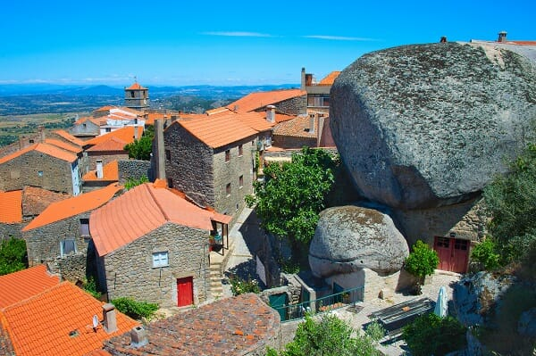
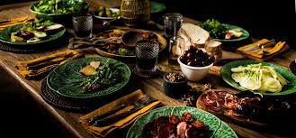
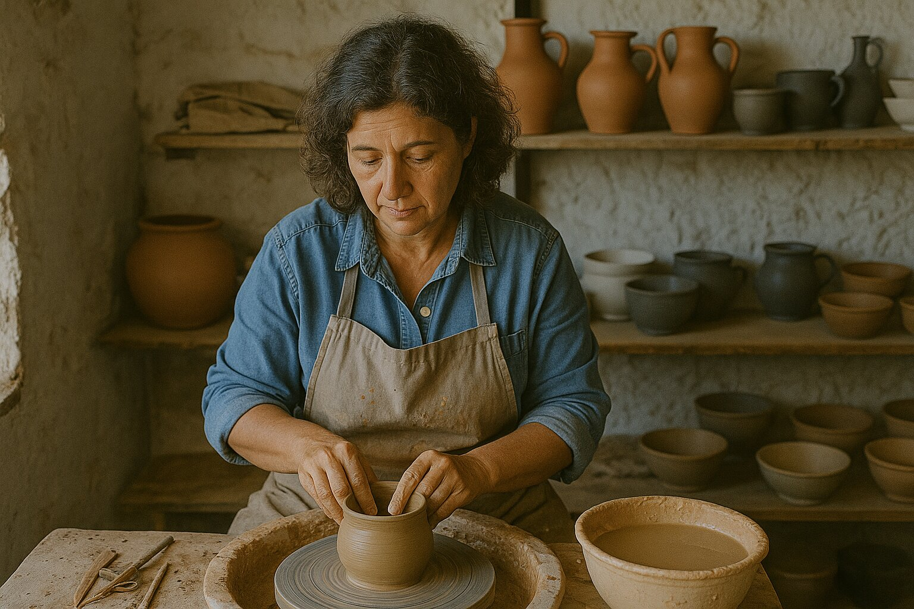
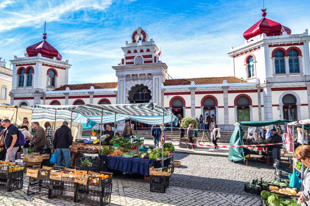
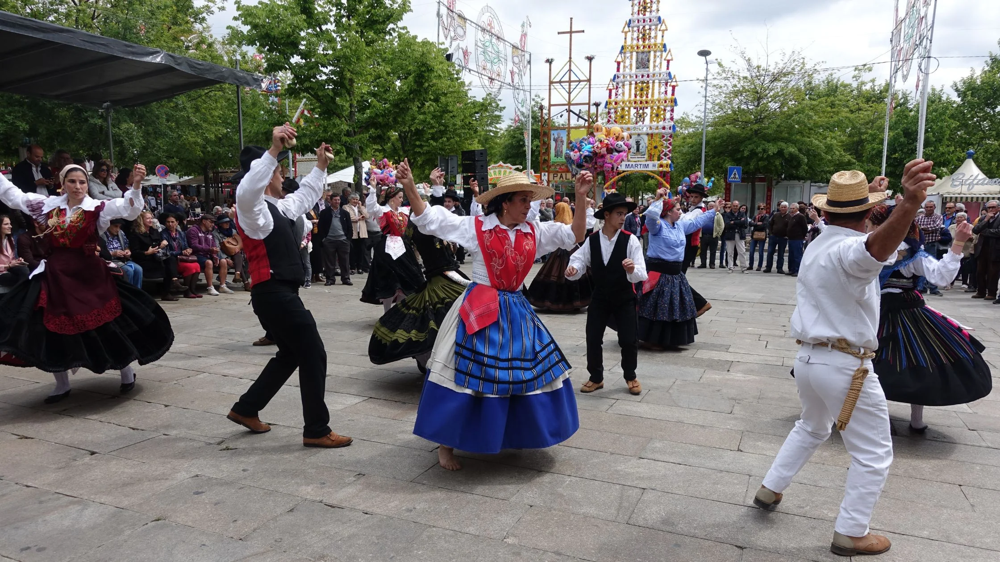
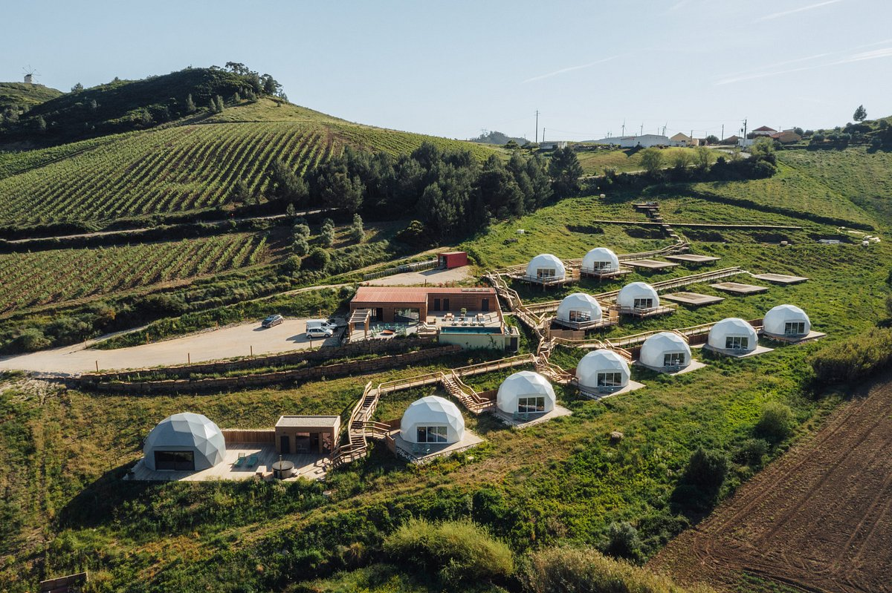

Village Life
Experience authentic Portuguese village culture, meet locals, and participate in traditional daily activities.

Home Cooking
Share meals with Portuguese families and learn cherished recipes passed down through generations.

Artisan Encounters
Meet craftspeople in their workshops and learn traditional techniques from pottery to weaving.

Local Markets
Shop alongside residents at neighborhood markets, discovering regional products and seasonal specialties.

Community Festivals
Join locals in celebrating traditional festivals, religious processions, and neighborhood gatherings.

Farm Visits
Spend time on working farms, help with harvests, and understand rural Portuguese agricultural traditions.